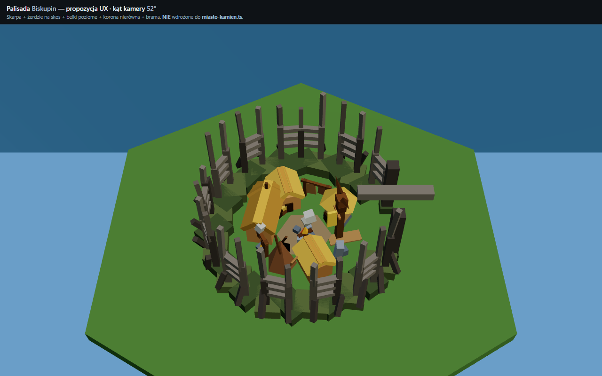
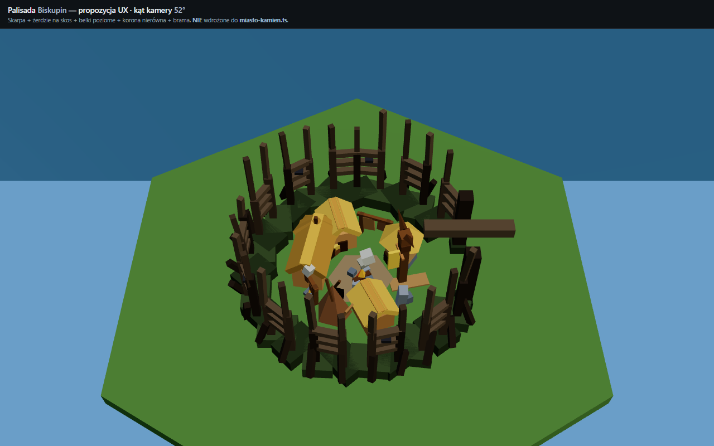

Referencja: drewniana fortyfikacja ze skarpą, żerdziami na skos, ścianą z belek poziomych
i pale pionowych, koroną o nierównej wysokości, szarym zwietrzałym drewnem; woda i trawa w tle.
Nie wdrożone do gry — tylko podgląd do akceptacji Macieja.
Regeneracja: node tools/build-palisada-biskupin-preview.cjs +
node tools/capture-palisada-biskupin-preview.cjs (z gra/).
wal() (proste pale):
Obecny wal() to jeden pierścień zaostrzonych stożków (zerdzi) z lekkim pochyleniem
i kilkoma głazami u podstawy — brak warstwy ziemnej (skarpy), belek poziomych i wyraźnej korony.
Propozycja Biskupin buduje czterowarstwową strukturę: skarpa z żerdziami na skos → ściana
belek+pali → nierówna korona → brama z nadprożem; drewno jest szare i zwietrzałe zamiast brązowych stożków.
Wariant Brąz zachowuje tę samą geometrię, ale ciemniejsze drewno i metalowe okucia na belkach i słupach bramy.


Porównanie z obecnym modelem gry: preview.html · interaktywny podgląd 3D: _tmp/preview-biskupin.html · ikona panelu: bld-palisada-proposal.svg
{kind=link}